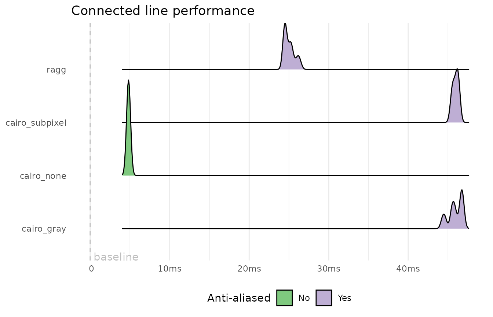
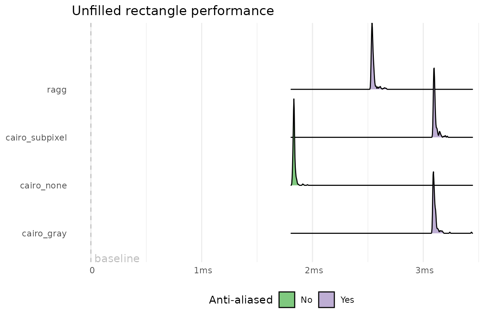
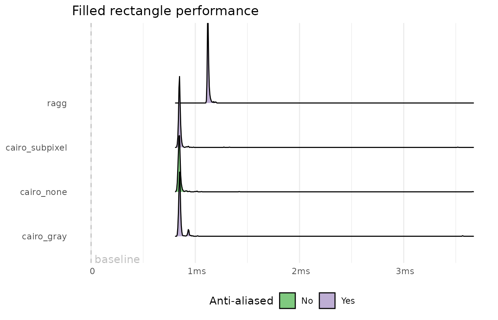
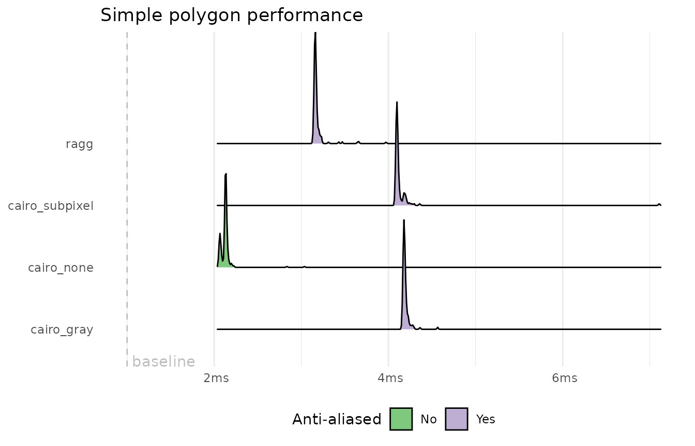
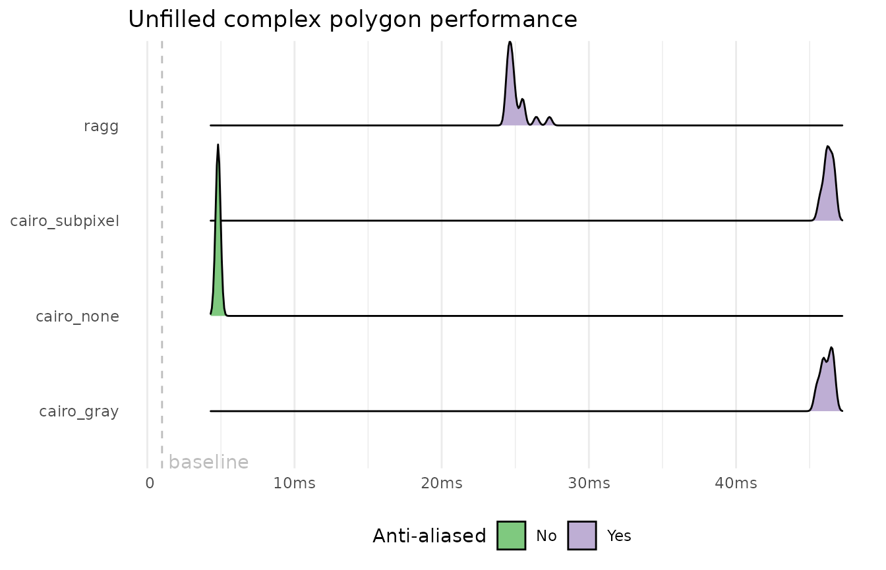
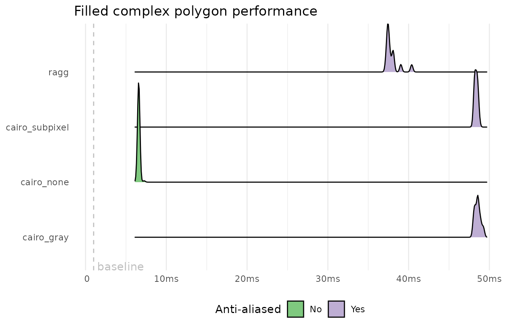
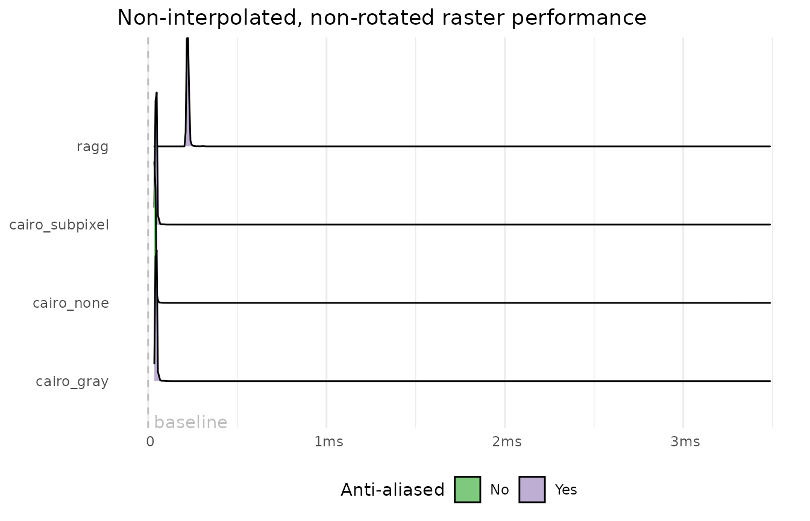
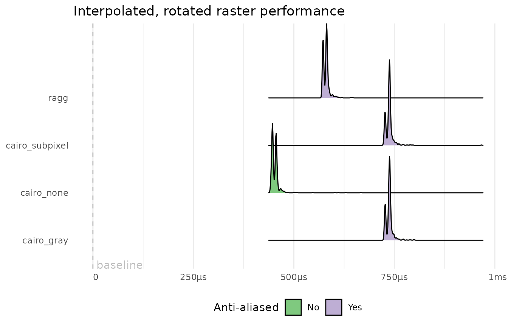
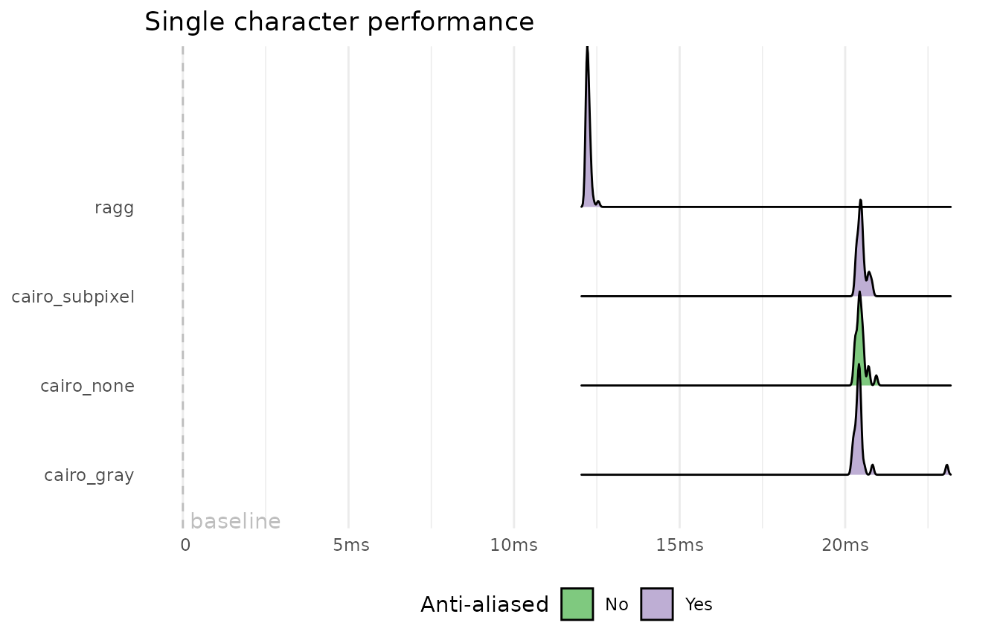
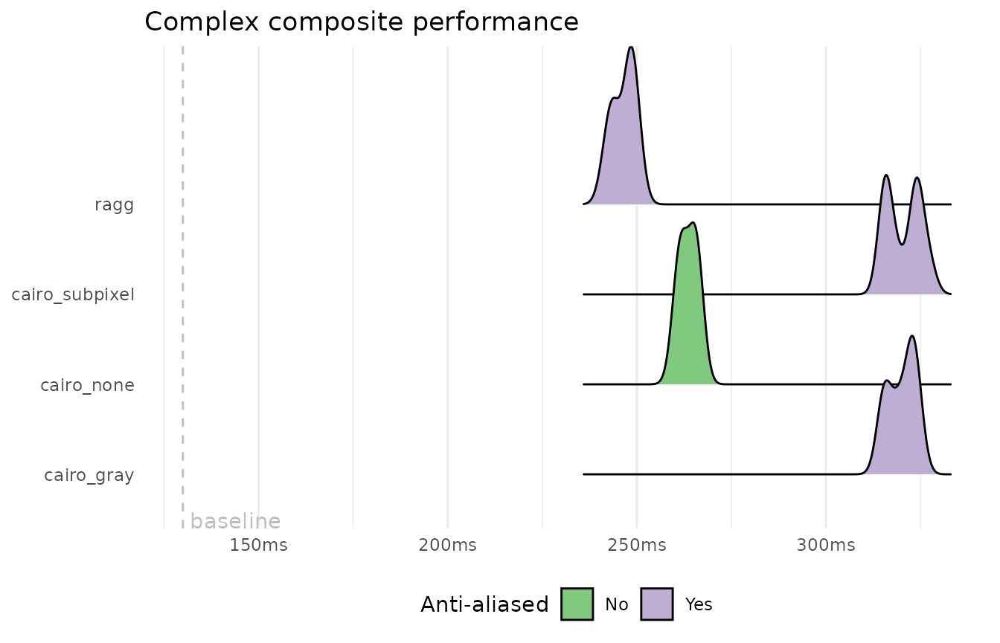

This document serves as a collection of benchmarks between ragg and the build-in raster devices provided by the grDevices package. As the output format is immaterial to the benchmarking, this document will only compare devices producing png images. The png() function from grDevices can use different rendering backends, with both different quality and speed, whereas agg_png() from ragg only provides a single backend. All backends will be compared here to give the fullest overview.
All benchmarks will also include timings of the same code with the void_dev() device from the devoid package. The void_dev() device is a very simple device that does no operations on the input it receives. Because of this it serves as a measure for the time spent on non-rendering operations.
On Mac installation the png() function also offers (and defaults to) a quartz backend. As this is not available on all systems it will not be included here. Local tests have shown it to be about as performant or slightly below ragg.
The present version of this vignette has been compiled on a system without the X11 device. The benchmarkings will thus omit this device, though the text will still refer to it.
Opening and closing
All subsequent benchmarks will not include the opening and closing of the device and instead focus on rendering performance. The most important, and potentially time-consuming, part of opening and closing a device is allocation of a buffer to write raster information to, and serialising the buffer into a file. It is also where performance differences between e.g. png and tiff will come from. As both ragg and grDevices uses the same underlying libraries to write to png files (libpng) it is not expected that there is much difference.
file <- tempfile(fileext = '.png') res <- bench::mark( ragg = {agg_png(file); plot.new(); dev.off()}, cairo = {png(file, type = 'cairo'); plot.new(); dev.off()}, cairo_png = {png(file, type = 'cairo-png'); plot.new(); dev.off()}, Xlib = if (has_xlib) {png(file, type = 'Xlib'); plot.new(); dev.off()} else NULL, check = FALSE ) if (!has_xlib) { res <- res[-4, ] attr(res$expression, 'description') <- attr(res$expression, 'description')[-4] } plot(res, type = 'ridge') + ggtitle('Open and close performance')

As can be seen, it is not as clear cut as it seems. ragg and cairo_png have equivalent performance, while Cairo is about twice as fast. Xlib on the other hand is even slower. Looking at the produced files we can see that ragg and cairo_png produce files of around 2Kb, whereas cairo produces files of around 300B and XLib around 6Kb. The differences can thus be ascribed to disk write speed more than anything, and is probably due to different compression and filtering settings used. ragg uses the default heuristics from libpng, and my guess is that cairo_png uses this as well. A white rectangle (as produced by plot.new()) is amenable to a lot of compression and it is possible that cairo has been tuned for that. It is likely that the advantage will disappear with more complex plots but it is difficult to test without inflating it with rendering speed.
Rendering
A graphic device provides a range of methods that R’s graphic engine will use when it receives plotting instructions from the user. The more performant each of these methods are, the more performant the graphic device is as a whole. The possible devices from grDevices increases here, as different anti-aliasing settings can be used (ragg, again, has no settings for this. It will always draw with subpixel antialiasing). Below is an attempt to benchmark each of the device methods by constructing as direct as possible calls to each of them. Remember, void_dev() provides the baseline.
render_bench <- function(dev_f, ...) { dots <- rlang::enexprs(...) force(dev_f) on.exit(dev.off()) plot.new() rlang::eval_tidy(expr(bench::mark(!!!dots, min_iterations = 10))) } all_render_bench <- function(expr, xlib = TRUE) { file <- tempfile() expr <- rlang::enexpr(expr) res <- list( render_bench(agg_png(file), ragg = !!expr), render_bench(png(file, type = "cairo", antialias = 'none'), cairo_none = !!expr), render_bench(png(file, type = "cairo", antialias = 'gray'), cairo_gray = !!expr), render_bench(png(file, type = "cairo", antialias = 'subpixel'), cairo_subpixel = !!expr), if (has_xlib && xlib) render_bench(png(file, type = "Xlib"), xlib = !!expr) else NULL ) expr <- unlist(lapply(res, `[[`, 'expression'), recursive = FALSE) res <- do.call(rbind, res) res$expression <- expr class(res$expression) <- c('bench_expr', 'expression') attr(res$expression, 'description') <- names(res$expression) res$Anti_aliased <- c(TRUE, FALSE, TRUE, TRUE, FALSE)[seq_len(nrow(res))] res } plot_bench <- function(x, title, baseline) { plot(x, type = 'ridge', aes(fill = Anti_aliased)) + facet_null() + geom_vline(xintercept = baseline['elapsed'], linetype = 2, colour = 'grey') + annotate('text', x = baseline['elapsed'], y = -Inf, label = ' baseline', vjust = 0, hjust = 0, colour = 'grey') + scale_fill_brewer(labels = c('No', 'Yes'), type = 'qual') + labs(title = title, fill = 'Anti-aliased', x = NULL, y = NULL) + theme_minimal() + theme(panel.grid.major.y = element_blank(), legend.position = 'bottom') + scale_x_continuous(labels = function(x) {format(bench:::as_bench_time(x))}) }
Circles
Circles can be drawn with e.g. grid.circle() but is often used when drawing scatter plots as the default point type. It is thus of high importance that circle drawing is as performant as possible, as it may get called thousands of times during the creation of a plot.
x <- runif(1000) y <- runif(1000) pch <- 1 void_dev() plot.new() b <- system.time(points(x, y, pch = pch)) invisible(dev.off()) res <- all_render_bench(points(x, y, pch = pch)) plot_bench(res, 'Unfilled circle performance', b)

pch <- 19 void_dev() plot.new() b <- system.time(points(x, y, pch = pch)) invisible(dev.off()) res <- all_render_bench(points(x, y, pch = pch)) plot_bench(res, 'Filled circle performance', b)

Of all of the antialiased devices it is clear that ragg is the most performant. The performance gain is most pronounced with unfilled circles due to the fact that cairo doesn’t antialias fill, only stroke and text. Xlib is by far the most performant device, but also the one rendering with the lowest quality by far (see the Rendering quality vignette).
Lines
Lines is another fundamental part. It can be used to draw single line segments directly and is also the workhorse for some of the different symbol types, e.g. pch = 4, which we will use here.
pch <- 4 void_dev() plot.new() b <- system.time(points(x, y, pch = pch)) invisible(dev.off()) res <- all_render_bench(points(x, y, pch = pch)) plot_bench(res, 'Line segment performance', b)

Again, we see a clear performance difference between devices using antialiasing and those that do not. ragg is once again the fastest one using anti-aliasing.
Polylines
Polylines are connected line segments. We should expect the same picture as for lines given that the operations are quite similar. We will also test different line patterns here to assess whether there are any differences in the efficency with which patterns are generated.
void_dev() plot.new() b <- system.time(lines(x, y)) invisible(dev.off()) res <- all_render_bench(lines(x, y)) plot_bench(res, 'Connected line performance', b)

void_dev() plot.new() b <- system.time(lines(x, y, lty = 4)) invisible(dev.off()) res <- all_render_bench(lines(x, y, lty = 4)) plot_bench(res, 'Patterned connected line performance', b)

The results here are quite surprising. While the general pattern continues, the anti-aliasing in cairo is much slower than in the other setups. For the patterned test we see that Xlib is so slow at generating patterned lines that it completely negates its otherwise solid rendering speed leadership (again, at the cost of quality).
Rectangles
Rectangle is another graphic primitive that has its own method. Again, it is used when plotting certain types of points, and this is how we’ll test it:
pch <- 0 void_dev() plot.new() b <- system.time(points(x, y, pch = pch)) invisible(dev.off()) res <- all_render_bench(points(x, y, pch = pch)) plot_bench(res, 'Unfilled rectangle performance', b)

pch <- 15 void_dev() plot.new() b <- system.time(points(x, y, pch = pch)) invisible(dev.off()) res <- all_render_bench(points(x, y, pch = pch)) plot_bench(res, 'Filled rectangle performance', b)

We see a new pattern with the filled rectangles, where ragg is suddenly the slow one. The reason for this is again that cairo does not apply anti-aliasing on fills and drawing a non anti-aliased filled rectangle is extremely simple.
Polygons
Polygons are the general case of what we’ve seen with circles and rectangles. While certain optimisations may be possible for e.g. rectanges the polygon method of device needs to handle all cases. It is used in points for e.g. triangles, but we will also test performance for bigger, more complex polygons.
pch <- 2 void_dev() plot.new() b <- system.time(points(x, y, pch = pch)) invisible(dev.off()) res <- all_render_bench(points(x, y, pch = pch)) plot_bench(res, 'Simple polygon performance', b)

void_dev() plot.new() b <- system.time(polygon(x, y)) invisible(dev.off()) res <- all_render_bench(polygon(x, y)) plot_bench(res, 'Unfilled complex polygon performance', b)

void_dev() plot.new() b <- system.time(polygon(x, y, border = 'gray', col = 'black')) invisible(dev.off()) res <- all_render_bench(polygon(x, y, border = 'gray', col = 'black')) plot_bench(res, 'Filled complex polygon performance', b)

The findings here reflect what is seen above. ragg is faster when it comes to drawing the lines, but looses the advantage with fill as it is the only one performing anti-aliasing fill.
Paths
Paths are the supercharged versions of polygons with support for holes and whatnot. It is one of the features that was added later in the lifetime of the R graphic engine and devices can thus elect not to support it. Most do, however, including cairo, but not Xlib. In ragg path rendering is implemented in the same way as polygon rendering (the polygon method being a special case of the path method), but how the other devices implement it is not something I know.
section <- rep(1:10, each = 100) x_path <- unlist(lapply(split(x, section), function(x) c(x, NA))) y_path <- unlist(lapply(split(y, section), function(x) c(x, NA))) x_path <- x_path[-length(x_path)] y_path <- y_path[-length(y_path)] void_dev() plot.new() b <- system.time(polypath(x_path, y_path, rule = 'evenodd')) invisible(dev.off()) res <- all_render_bench(polypath(x_path, y_path, rule = 'evenodd'), xlib = FALSE) plot_bench(res, 'Unfilled path performance', b)

void_dev() plot.new() b <- system.time(polypath(x_path, y_path, rule = 'evenodd', border = 'gray', col = 'black')) invisible(dev.off()) res <- all_render_bench(polypath(x_path, y_path, rule = 'evenodd', border = 'gray', col = 'black'), xlib = FALSE) plot_bench(res, 'Filled path performance', b)

The path performance mirrors that of the other shape rendering. ragg is faster when it comes to drawing the stroke, but the speed advantage is almost lost when the shape is filled as well as cairo do not anti-alias fill. Xlib is not present here as path rendering is unsupported.
Raster
The ability to draw raster images is also one of the later capabilities added to the graphic engine. Again, you don’t have to support it, but all the devices we look at do. Raster images can be rotated, and they can be interpolated or not during scaling. How interpolation happens is device specific, so there’s a lot of room for quality differences which we will not look at here.
raster <- matrix(hcl(0, 80, seq(50, 80, 10)), nrow = 4, ncol = 5) void_dev() plot.new() b <- system.time(rasterImage(raster, xleft = rep(0.25, 100), ybottom = 0.25, xright = 0.75, ytop = 0.75, interpolate = FALSE)) invisible(dev.off()) res <- all_render_bench(rasterImage(raster, xleft = 0.25, ybottom = 0.25, xright = 0.75, ytop = 0.75, interpolate = FALSE)) plot_bench(res, 'Non-interpolated, non-rotated raster performance', b)

void_dev() plot.new() b <- system.time(rasterImage(raster, xleft = rep(0.25, 100), ybottom = 0.25, xright = 0.75, ytop = 0.75, interpolate = FALSE, angle = 27)) invisible(dev.off()) res <- all_render_bench(rasterImage(raster, xleft = 0.25, ybottom = 0.25, xright = 0.75, ytop = 0.75, interpolate = FALSE, angle = 27)) plot_bench(res, 'Non-interpolated, rotated raster performance', b)

void_dev() plot.new() b <- system.time(rasterImage(raster, xleft = rep(0.25, 100), ybottom = 0.25, xright = 0.75, ytop = 0.75, interpolate = TRUE)) invisible(dev.off()) res <- all_render_bench(rasterImage(raster, xleft = 0.25, ybottom = 0.25, xright = 0.75, ytop = 0.75, interpolate = TRUE)) plot_bench(res, 'Interpolated, non-rotated raster performance', b)

void_dev() plot.new() b <- system.time(rasterImage(raster, xleft = rep(0.25, 100), ybottom = 0.25, xright = 0.75, ytop = 0.75, interpolate = TRUE, angle = 27)) invisible(dev.off()) res <- all_render_bench(rasterImage(raster, xleft = 0.25, ybottom = 0.25, xright = 0.75, ytop = 0.75, interpolate = TRUE, angle = 27)) plot_bench(res, 'Interpolated, rotated raster performance', b)

Plotting rasters is whicked fast it appears. For non-rotated rasters ragg is a tiny bit slower than cairo, maybe due to anti-aliasing of the edges. The loss is gained again when it comes to rotation, indicating a more performant affine transformation implementation. Xlib is significantly slower here, for reasons beyond me.
Text
Text in data visualisation is crucial, and one of the hardest parts when implementing a graphic device. This is reflected in e.g. the inability of the native devices to find system fonts, thus having to rely on e.g. the extrafont or showtext packages for that. Anyway, again we only look at performance in this document.
pch <- "#" void_dev() plot.new() b <- system.time(points(x, y, pch = pch)) invisible(dev.off()) res <- all_render_bench(points(x, y, pch = pch)) plot_bench(res, 'Single character performance', b)

void_dev() plot.new() b <- system.time(text(x, y, label = 'abcdefghijk')) invisible(dev.off()) res <- all_render_bench(text(x, y, label = 'abcdefghijk')) plot_bench(res, 'Text string performance', b)

Once again Xlib surprises with a significantly slower font handling than its anti-aliased peers. ragg is slightly faster than cairo again but not by much. In general text rendering is governed as much by how quickly the code looks up glyphs in the font database as it is about rendering speed.
Complex example
All of these primitives apart can be difficult to compare. In general it appears like ragg has a small but consistent lead in performance among the anti-aliased devices safe for a few areas. The last benchmark will tie it all together in a more complete graphic made using ggplot2 (don’t worry about the quality of the graphic — we are simply pilling stuff on top of each others):
p <- ggplot(diamonds, aes(carat, price)) + geom_hex() + geom_point(shape = 1, size = 0.05, colour = 'white') + geom_smooth() + facet_wrap(~clarity) + labs(title = '5 things you didn\'t knew about the diamonds dataset', subtitle = 'You won\'t believe number 4', caption = 'Source: The ggplot2 package') p

We will prebuild the plot so mainly rendering will be measured
p <- ggplotGrob(p) void_dev() b <- system.time(plot(p)) invisible(dev.off()) res <- all_render_bench(plot(p)) plot_bench(res, 'Complex composite performance', b)

We see that with complex graphics the speed benefit of the non anti-aliased Xlib device disappears (probably due to its slow text rendering). Ragg is clearly the fastest anti-aliased device, but it should be noted that the example deliberately included both stroked and filled shapes. If only plotting fill the speed advantage might become smaller or disappear. Something else that we haven’t discussed here, but may affect speed in such a complex graphic is clipping speed (not drawing elements outside of the clipping region).
Conclusion
If there is one point, beyond any doubt, to gain from this, it is that anti-aliasing will cost you in specific situation, but it will even out in complex tasks. Xlib and non anti-aliased cairo is almost consistently the fastest at rendering primitives, though both show surprising problems in some tasks. If you want anti-aliasing (you generally do), then ragg is consistently the fastest options, with a general speed gain of around ~33% compared to cairo. In the places where the speed gain is less it is mainly because cairo chooses not to use anti-aliasing for fill. The decision to not anti-alias fill is questionable in my opinion. If a stroke is also drawn it is indeed immaterial whether the underlying fill is anti-aliased, that is, unless the stroke is transparent. If no stroke is drawn the result is obviously ugly. It could be argued that the device could inspect whether a solid stroke was going to be drawn and make a choice based on that, but line width comes into effect as well. A very thin stroke will not be able to hide the jagged non anti-aliased fill completely and result in unacceptable visual artefacts. Because of this, ragg has chosen to simply always use anti-aliasing. At worst, it makes it only as performant as the cairo counterpart, at best it is faster and with a higher quality output.
Session info
sessioninfo::session_info() #> ─ Session info ─────────────────────────────────────────────────────────────── #> setting value #> version R version 3.6.2 (2017-01-27) #> os Ubuntu 16.04.6 LTS #> system x86_64, linux-gnu #> ui X11 #> language en_US.UTF-8 #> collate en_US.UTF-8 #> ctype en_US.UTF-8 #> tz UTC #> date 2020-04-09 #> #> ─ Packages ─────────────────────────────────────────────────────────────────── #> package * version date lib source #> assertthat 0.2.1 2019-03-21 [1] CRAN (R 3.6.2) #> backports 1.1.6 2020-04-05 [1] CRAN (R 3.6.2) #> bench 1.1.1 2020-01-13 [1] CRAN (R 3.6.2) #> cli 2.0.2 2020-02-28 [1] CRAN (R 3.6.2) #> colorspace 1.4-1 2019-03-18 [1] CRAN (R 3.6.2) #> crayon 1.3.4 2017-09-16 [1] CRAN (R 3.6.2) #> desc 1.2.0 2018-05-01 [1] CRAN (R 3.6.2) #> devoid * 0.1.0 2019-05-03 [1] CRAN (R 3.6.2) #> digest 0.6.25 2020-02-23 [1] CRAN (R 3.6.2) #> dplyr 0.8.5 2020-03-07 [1] CRAN (R 3.6.2) #> ellipsis 0.3.0 2019-09-20 [1] CRAN (R 3.6.2) #> evaluate 0.14 2019-05-28 [1] CRAN (R 3.6.2) #> fansi 0.4.1 2020-01-08 [1] CRAN (R 3.6.2) #> farver 2.0.3 2020-01-16 [1] CRAN (R 3.6.2) #> fs 1.4.1 2020-04-04 [1] CRAN (R 3.6.2) #> ggplot2 * 3.3.0 2020-03-05 [1] CRAN (R 3.6.2) #> ggridges 0.5.2 2020-01-12 [1] CRAN (R 3.6.2) #> glue 1.4.0 2020-04-03 [1] CRAN (R 3.6.2) #> gtable 0.3.0 2019-03-25 [1] CRAN (R 3.6.2) #> hexbin 1.28.1 2020-02-03 [1] CRAN (R 3.6.2) #> htmltools 0.4.0 2019-10-04 [1] CRAN (R 3.6.2) #> knitr 1.28 2020-02-06 [1] CRAN (R 3.6.2) #> labeling 0.3 2014-08-23 [1] CRAN (R 3.6.2) #> lattice 0.20-38 2018-11-04 [4] CRAN (R 3.6.2) #> lifecycle 0.2.0 2020-03-06 [1] CRAN (R 3.6.2) #> magrittr 1.5 2014-11-22 [1] CRAN (R 3.6.2) #> MASS 7.3-51.4 2019-03-31 [4] CRAN (R 3.6.2) #> Matrix 1.2-18 2019-11-27 [4] CRAN (R 3.6.2) #> memoise 1.1.0 2017-04-21 [1] CRAN (R 3.6.2) #> mgcv 1.8-31 2019-11-09 [4] CRAN (R 3.6.2) #> munsell 0.5.0 2018-06-12 [1] CRAN (R 3.6.2) #> nlme 3.1-142 2019-11-07 [4] CRAN (R 3.6.2) #> pillar 1.4.3 2019-12-20 [1] CRAN (R 3.6.2) #> pkgconfig 2.0.3 2019-09-22 [1] CRAN (R 3.6.2) #> pkgdown 1.5.1 2020-04-09 [1] CRAN (R 3.6.2) #> plyr 1.8.6 2020-03-03 [1] CRAN (R 3.6.2) #> profmem 0.5.0 2018-01-30 [1] CRAN (R 3.6.2) #> purrr 0.3.3 2019-10-18 [1] CRAN (R 3.6.2) #> R6 2.4.1 2019-11-12 [1] CRAN (R 3.6.2) #> ragg * 0.1.5.9000 2020-04-09 [1] local #> RColorBrewer 1.1-2 2014-12-07 [1] CRAN (R 3.6.2) #> Rcpp 1.0.4.6 2020-04-09 [3] CRAN (R 3.6.3) #> rlang 0.4.5 2020-03-01 [1] CRAN (R 3.6.2) #> rmarkdown 2.1 2020-01-20 [1] CRAN (R 3.6.2) #> rprojroot 1.3-2 2018-01-03 [1] CRAN (R 3.6.2) #> scales 1.1.0 2019-11-18 [1] CRAN (R 3.6.2) #> sessioninfo 1.1.1 2018-11-05 [1] CRAN (R 3.6.2) #> stringi 1.4.6 2020-02-17 [1] CRAN (R 3.6.2) #> stringr 1.4.0 2019-02-10 [1] CRAN (R 3.6.2) #> systemfonts 0.1.1 2019-07-01 [1] CRAN (R 3.6.2) #> tibble 3.0.0 2020-03-30 [1] CRAN (R 3.6.2) #> tidyr 1.0.2 2020-01-24 [1] CRAN (R 3.6.2) #> tidyselect 1.0.0 2020-01-27 [1] CRAN (R 3.6.2) #> vctrs 0.2.4 2020-03-10 [1] CRAN (R 3.6.2) #> withr 2.1.2 2018-03-15 [1] CRAN (R 3.6.2) #> xfun 0.12 2020-01-13 [1] CRAN (R 3.6.2) #> yaml 2.2.1 2020-02-01 [1] CRAN (R 3.6.2) #> #> [1] /home/travis/R/Library #> [2] /usr/local/lib/R/site-library #> [3] /usr/lib/R/site-library #> [4] /home/travis/R-bin/lib/R/library